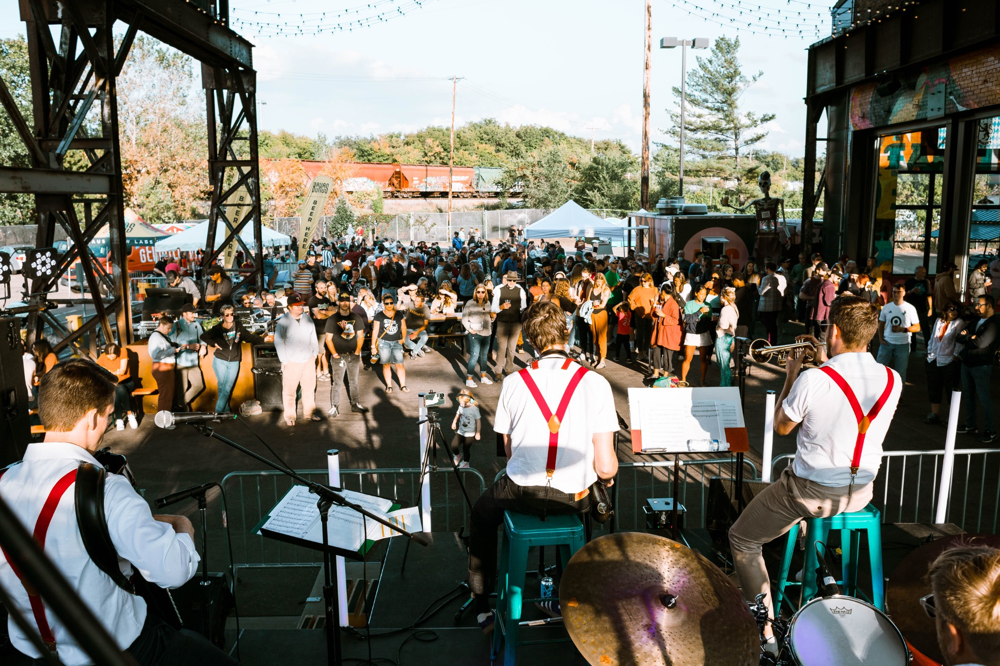
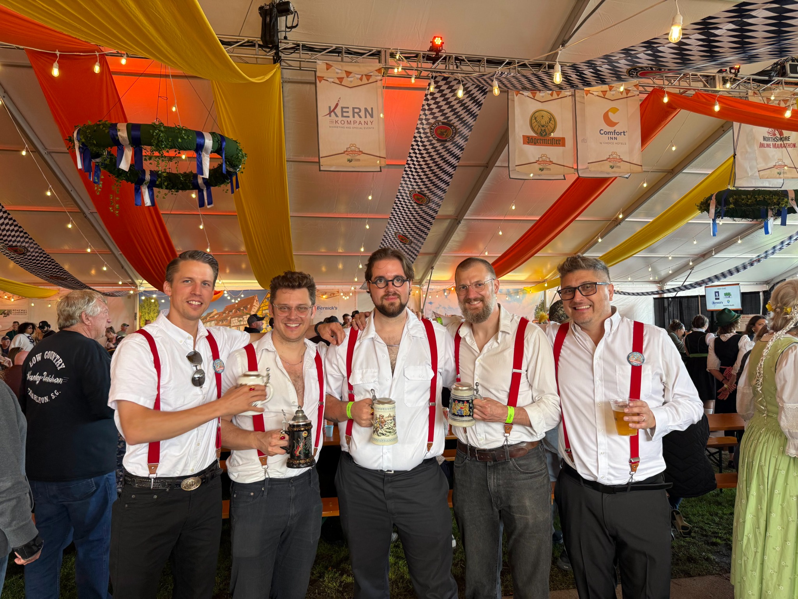

LIVE MUSIC • FESTIVALS • GOOD TIMES
IT'S
POLKAZEIT!
Turn up the energy. Bring on the party.
MEET THE BAND
GOOD MUSIC.
GREAT TIMES.
Polka-Zeit brings the energy of live polka and festival music to the stage. Come for the music. Stay for the party.
Get to know us ↗
THE PEOPLE BEHIND THE MUSIC
FIVE GUYS.
ONE BIG SOUND.
Meet the musicians behind Polka-Zeit.
About the band ↗EXPLORE
MORE POLKA-ZEIT